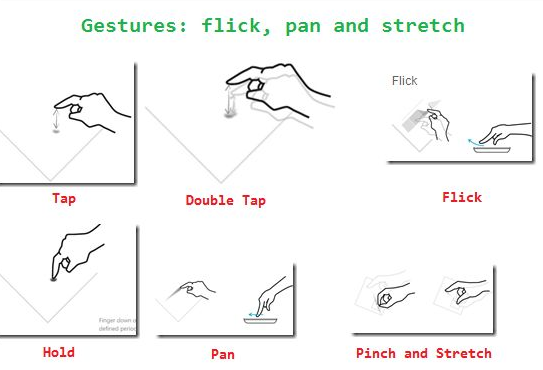

Swipe
JavaScript Touch Event
https://developer.mozilla.org/en-US/docs/Web/API/Touch_events
https://gist.github.com/SleepWalker/da5636b1abcbaff48c4d
https://github.com/tri613/swipe-it
https://css-tricks.com/the-javascript-behind-touch-friendly-sliders/
https://css-tricks.com/slider-with-sliding-backgrounds/
http://hammerjs.github.io/
https://blog.envylabs.com/build-your-own-touch-slider-with-hammerjs-af99665d2869
https://api.jquerymobile.com/swipe/
https://github.com/mattbryson/TouchSwipe-Jquery-Plugin
Swipe tháng của ứng dụng My Calendar
https://owlcarousel2.github.io/OwlCarousel2/
http://kenwheeler.github.io/slick/ (nhiều star hơn)
Các thao tác

- burnmind.com How to build a slideshow with a blinds transition using jQuery | burnmind.com
- burnmind.com How to create a mosaic transition effect between two photos using jQuery demo
- freefrontend.com 90 CSS Image Effects
- lockex1987.github.io Simple JS Dragbar
- lockex1987.github.io Slide in animation
- lockex1987.github.io https://lockex1987.github.io/posts/ui - image comparison slider/